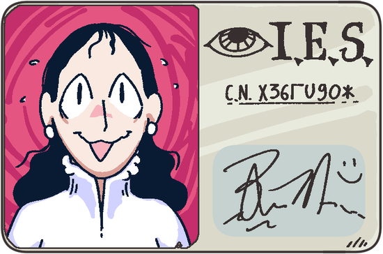
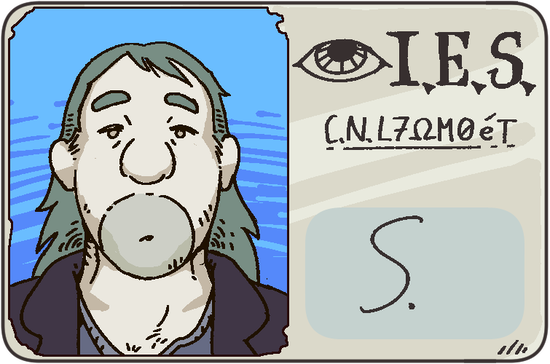
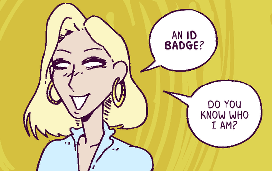
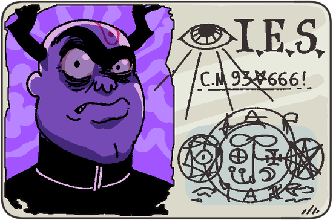

Cast
River

- Title: M.Sc.
- Specialization: Hydrosemiotics
- M.Sc. Thesis: "The P=Pee conjecture and glossolalia-incontinence duality"
Prof. Reza Malik
- Title: Full Professor
- Specialization: Hydrosemiotics
- Latest Publication: "Laminar flow in body language: a dry approach"
- Reprimands by the institute's board of ethics: Less than five!
Syl

- Title: Ph.D.
- Specialization: Subtle Ecology
- Ph.D. Thesis: "The impact of malaric diseases on cryptid populations in mangrove swamps"
- Current conspiracy theory: Air is fake
Corporate

- Title: "Brings the dough"
- Specialization: Capitalist Miraculation
- Business Function: Team's meta-physician
- Net Worth: Staggering
Augusto Arditissimo (A∴A∴)

- Title: Blood-Letting Beast of the Æon and High Priest of Our Aweful Lady of Warfare, DVX of the Psychic Realms
- Academic Title: Full Professor (no students in decades)
- Specialization: Wartime Cosmology
- Last Deed: Slain four-hundred men on the battlefield (medal has been lost)